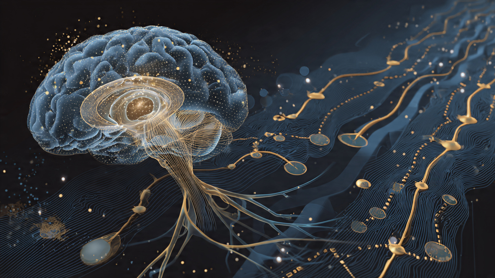

The Closed-Loop Human Is 7 Years Away. Here Is What Already Works.
An FDA-approved brain implant auto-tunes neural circuits every 250 milliseconds. A wristband tracks stress hormones in your sweat at picomolar resolution. Engineered cells produce insulin on demand for 90 days without immune suppression. An ultrasound-powered chip releases drugs based on electrochemical feedback. The four layers of autonomous human biochemical optimization each exist somewhere. Nobody has connected them.

A $21.33 billion industry exists because humans know their neurochemistry is suboptimal and have no way to fix it precisely. That is the global nootropics market as of 2025, projected to hit $80.39 billion by 2035 at a 14.19% compound annual growth rate, according to Precedence Research. People swallow caffeine, L-theanine, modafinil, lion's mane, and dozens of other compounds hoping to shift neurotransmitter balances they cannot see, cannot measure, and cannot verify actually changed. It is the biochemical equivalent of adjusting a thermostat while blindfolded, with no thermometer, in someone else's house.
The reason this market exists is not that humans lack the desire for neurochemical precision. It is that the three-layer engineering problem required to achieve it has never been solved simultaneously: sense what your body is doing in real time, decide what it should be doing instead, and act by releasing the right substance at the right dose. As of April 2026, each layer has working technology at different stages of maturity, and the convergence timeline is shorter than most people realize.
Layer 1: Sense. This One Is Nearly Solved.
Start with what we can already measure continuously. Dexcom's G7 and Abbott's Libre 3 continuous glucose monitors represent the most mature closed-loop sensing technology deployed at scale. Millions of people wear subcutaneous sensors that read interstitial glucose every one to five minutes with a mean absolute relative difference (MARD) below 9%, transmitting readings to smartphones in real time. The technology took 25 years from first implantable glucose sensor to mass consumer adoption. It is the template for everything that follows.
Cortisol is next. In 2025, Wei Gao's lab at Caltech published a wearable microfluidic biosensor called Stressomic in Science Advances that simultaneously tracks cortisol, epinephrine, and norepinephrine in human sweat using laser-engraved graphene electrodes with picomolar-level sensitivity. The device uses iontophoresis to stimulate sweat production, then routes the sample through bursting-valve microfluidic channels for continuous electrochemical analysis. It works. In human studies, physical stress (HIIT cycling) elevated both cortisol and norepinephrine, while emotional stress (provocative audiovisual stimuli) elevated norepinephrine but barely moved cortisol, demonstrating that the sensor can distinguish between different types of stress through their distinct hormonal signatures.
"When we actually confirmed the presence of epinephrine and norepinephrine in sweat at physiologically meaningful levels, it was a real 'we can actually do this' moment, since this hadn't been shown in situ before," Gao told The Analytical Scientist.
Separately, a wearable molecularly imprinted polymer (MIP) electrochemical sensor published in early 2025 achieved continuous cortisol detection in sweat with an ultrawide range of 0.1 picomolar to 5 micromolar, high selectivity (over 100-fold against glucose and lactic acid interferents), and less than 3.76% signal attenuation over 120 measurement cycles. The response tracked the diurnal cortisol rhythm accurately.
Brain neurotransmitters are harder. The NIH BRAIN Initiative funded Lin Tian's lab at UC Davis to build an AI-designed fluorescent serotonin sensor by re-engineering a Venus flytrap-shaped bacterial protein called OpuBC. Published in Cell in 2020, the sensor detected real-time serotonin changes in mouse brains during sleep-wake transitions, fear conditioning, and social interactions. A complementary family of genetically encoded sensors called sDarken showed two-photon in vivo imaging of serotonin dynamics at high temporal and spatial resolution. These are laboratory tools, not wearable devices, but they prove that sub-second neurotransmitter tracking is physically possible.
Where sensing stands: peripheral hormones in sweat (cortisol, epinephrine, norepinephrine) can be measured continuously today with wearable prototypes that work on real humans. Brain neurotransmitters (serotonin, dopamine, GABA) can be measured in real time in animal models but require invasive probes or genetically encoded reporters that are years from human use. The sensing gap between "what is in your sweat" and "what is in your prefrontal cortex" is the single largest bottleneck in the entire stack.
Layer 2: Decide. The Hardest Problem Nobody Is Funding.
Knowing your cortisol level is 18 nanomoles per liter at 3 PM means nothing without a model of what it should be. This is the decision layer, and it is the least developed piece of the entire closed-loop architecture, which is remarkable given that it is the piece most likely to be handled by software rather than hardware.
The closest existing analog is the Medtronic Percept RC's adaptive deep brain stimulation algorithm, FDA-approved in February 2025 as the world's first commercially available brain-computer interface technology of its kind. The system reads subthalamic beta oscillation power in real time, every 250 milliseconds, and uses a dual-threshold algorithm to adjust stimulation amplitude: when beta power exceeds an upper threshold (indicating the brain is entering a hypokinetic state), stimulation increases; when it drops below a lower threshold, stimulation decreases. In an eight-patient chronic study, six of eight patients chose to remain on adaptive DBS over continuous DBS, with significant improvement in overall well-being (p = 0.007) and a trend toward enhanced movement (p = 0.058).
But this is a simple two-threshold controller for a single neural signal treating a specific disease. The decision problem for general-purpose biochemical optimization is orders of magnitude harder. Consider what "optimal" means for cortisol alone: too low in the morning causes fatigue and cognitive fog; too high causes anxiety, impaired memory consolidation, and immune suppression; the ideal curve varies by chronotype, sleep quality the previous night, exercise timing, caloric intake, menstrual cycle phase, and ambient stressor load. No one has built a personalized cortisol model that integrates these variables, let alone one that simultaneously optimizes cortisol, dopamine, serotonin, norepinephrine, testosterone, and GABA with awareness of their interactions.
Bryan Johnson's Blueprint protocol is the brute-force version of this decision layer: over 100 biomarkers measured at regular intervals, an algorithm (reportedly custom-built by a team of physicians and data scientists) that adjusts interventions weekly, and a total spend Johnson has publicly stated exceeds $2 million per year. His measured results include a biological age reportedly 5.1 years younger than his chronological age based on epigenetic clock testing, resting heart rate in the low 50s, and Rejuvenation Olympics leaderboard performance. Blueprint proves the concept works but at a price point and labor intensity that serves as a proof of concept for approximately one human on Earth.
What is missing is the computational middle ground: an AI model trained on population-level biomarker data that can generate personalized targets for an individual's neurochemistry based on their sensor readings, historical patterns, genetic profile, and stated goals (focus, calm, recovery, sleep preparation). No lab has published such a model. No startup has shipped one. The decision layer is an open field.
Layer 3: Act. The Drug Delivery Problem Is Being Solved Three Different Ways.
Sensing and deciding are useless without an actuator that can release the right molecule at the right dose at the right time. Three parallel engineering approaches are converging on this problem, each with distinct tradeoffs.
Approach 1: Electronic drug delivery implants. A 2025 paper in IEEE demonstrated a wireless implantable closed-loop drug delivery system powered by ultrasound. The system consists of piezoelectric transducers for wireless power and data transmission, drug-loaded electroresponsive nanoparticles, and a custom CMOS integrated circuit with a programmable potentiostat (plus or minus 1.5 V, plus or minus 100 microamps). The closed-loop operates as follows: the potentiostat applies a voltage to the nanoparticle reservoir, measures the redox current flowing through the drug-loaded particles, and adjusts the stimulus voltage based on that feedback to achieve a target release amount. Tested in vitro at 8 cm depth, the system achieved consistent 2 microgram releases across different drug loading concentrations with a 39% reduction in release variation compared to open-loop. The device is millimeter-scale and ultrasound-powered, meaning no battery and no wired connection.
Approach 2: Biological cell factories. In March 2026, MIT's Daniel Anderson lab published in Device the results of an implantable encapsulated islet cell system that survived in mice for at least 90 days while producing enough insulin to control blood sugar levels without immune suppression. The device encapsulates the cells (protecting them from immune rejection) and carries an on-board oxygen generator to keep them alive. This is a closed-loop biological actuator: the cells themselves sense glucose and produce insulin proportionally, no external controller needed.
The insulin use case is the template. If you can engineer a cell that senses glucose and secretes insulin, you can, in principle, engineer a cell that senses dopamine precursor levels and secretes dopamine, or senses cortisol and secretes cortisol-binding globulin. The biology is harder for neurotransmitters because the required precision, timing, and anatomical targeting are stricter, but the engineering paradigm is the same: sense-and-respond at the cellular level.
Approach 3: Neuromodulation without chemistry. This bypasses drug delivery entirely by using electrical or magnetic stimulation to alter neurotransmitter activity indirectly. GammaCore, a non-invasive vagus nerve stimulation (nVNS) device, is FDA-cleared for migraine, cluster headache, paroxysmal hemicrania, and hemicrania continua. It works by stimulating the vagus nerve through the skin of the neck, which modulates ascending noradrenergic and serotonergic pathways. Military researchers have explored transcranial direct current stimulation (tDCS) targeting the dorsolateral prefrontal cortex for cognitive enhancement in multitasking scenarios, though results remain variable and no protocol has been standardized for performance optimization in healthy subjects.
Medtronic's adaptive DBS system combines both layers, sensing neural activity and delivering electrical stimulation in a closed loop, but only for Parkinson's disease. Extending this to healthy performance optimization faces regulatory barriers that are not merely bureaucratic but fundamental: the FDA approves devices to treat diseases, not to make healthy people perform better.
The Architecture Nobody Has Built
Here is the convergence diagram. Every component exists somewhere in the world in some form:
| Layer | Best Existing Technology | What It Measures or Does | Maturity | Estimated Timeline to Consumer |
|---|---|---|---|---|
| Sense (peripheral) | Caltech Stressomic | Cortisol, epinephrine, norepinephrine in sweat | Human prototype | 2028-2030 |
| Sense (peripheral) | Dexcom G7 / Abbott Libre 3 | Continuous glucose | Mass market | Available now |
| Sense (brain) | Medtronic Percept RC | Subthalamic beta oscillations | FDA-approved (disease only) | Available now (Parkinson's) |
| Sense (brain) | sDarken / OpuBC sensors | Serotonin dynamics in brain tissue | Animal models | 2032+ |
| Decide | Medtronic dual-threshold aDBS | Binary amplitude adjustment | FDA-approved (disease only) | Available now (Parkinson's) |
| Decide | Bryan Johnson Blueprint | 100+ biomarker manual optimization | N=1 proof of concept | N/A ($2M+/year) |
| Act (electronic) | Ultrasound CMOS drug delivery | Closed-loop nanoparticle release | In vitro | 2030-2033 |
| Act (biological) | MIT encapsulated islet cells | Glucose-responsive insulin production | Animal models (90-day survival) | 2029-2032 (diabetes first) |
| Act (electrical) | GammaCore nVNS | Vagus nerve stimulation | FDA-cleared (headache) | Available now (disease only) |
The full loop, a system that continuously reads your neurotransmitter levels, runs a personalized optimization model, and autonomously adjusts your biochemistry, does not exist. The fastest path to an approximation is probably a wearable cortisol/catecholamine sensor (2028-2030 commercial) paired with an AI decision model running on a smartphone (buildable today if training data existed) paired with a non-invasive vagus nerve stimulator or transcranial device (available now). That three-component system could plausibly reach market by 2030-2032, though it would be limited to modulating stress response and arousal rather than precisely dosing individual neurotransmitters.
For direct neurochemical control, meaning a system that senses brain dopamine and releases more or less of it, the timeline extends to 2033-2038. The sensing technology for brain-level neurotransmitters needs to move from animal models to human safety trials (3-5 years), the biological or electronic actuators need to move from in vitro to in vivo to FDA clearance (5-8 years for a novel implantable), and the decision model needs training data that only becomes available once the sensors are deployed at scale (chicken-and-egg problem that adds 2-3 years).
The $21 Billion Placeholder
The nootropics market exists because the closed-loop system does not. When someone takes 200 mg of L-theanine with 100 mg of caffeine hoping to achieve "calm focus," they are performing manual open-loop neurochemical modulation with no feedback. They do not know their baseline serotonin-to-dopamine ratio, cannot verify whether the intervention shifted it, and have no way to titrate the dose in real time based on whether their actual cognitive state matches their desired one. They are guessing. Sometimes the guess works. Often it does not. The next day, different sleep quality renders the same stack useless.
A closed-loop system would render most of this market obsolete. If a wearable sensor reads your cortisol and catecholamine levels, an AI model determines you need a mild dopaminergic boost with anxiolytic offset, and an actuator delivers precisely calibrated vagal stimulation (or, eventually, targeted molecular release), there is no reason to swallow a pill formulated for a generic human. The $21.33 billion nootropics market is not a permanent industry. It is a placeholder for technology that does not exist yet.
The same logic applies to a substantial portion of the $382 billion global antidepressant market. SSRIs work by increasing serotonin availability across the entire brain, all the time, because we cannot target specific circuits at specific times. Adaptive DBS for depression (which targets specific brain regions and adjusts stimulation based on biomarker feedback) has been explored in research settings, and Medtronic's adaptive platform creates the hardware pathway. The transition from "blanket serotonin increase" to "targeted, real-time, feedback-controlled serotonergic modulation" is not a theoretical possibility. It is an engineering timeline.
The Regulatory Wall Is Load-Bearing
Every technology described above was developed, tested, and approved (where applicable) for disease treatment. Medtronic's adaptive DBS treats Parkinson's. MIT's islet cells treat diabetes. GammaCore treats headaches. The FDA has no pathway for approving a device that makes healthy people "more focused" or "less stressed" or "cognitively optimized." The device classification system requires an intended use tied to a medical condition.
This is not a trivial bureaucratic hurdle. It shapes which research gets funded, which trials get run, which companies get built, and which products reach consumers. Dexcom spent decades getting CGM approved for diabetics before the non-diabetic biohacking community started wearing them off-label. The same pattern will repeat for every technology in this stack: disease use first, performance optimization second, separated by 5-10 years of regulatory lag and off-label adoption.
The likely sequence: closed-loop cortisol monitoring for Cushing's syndrome or Addison's disease (a recognized medical condition with clear clinical endpoints) reaches the market first. Non-diabetic continuous hormone monitoring follows as a "wellness" device under a lower regulatory burden. Performance optimization use cases emerge through consumer adoption of devices originally approved for medical conditions, the same way healthy people adopted continuous glucose monitors. The full closed-loop performance system, openly marketed for cognitive optimization in healthy adults, probably requires either a new regulatory category or a jurisdiction (Singapore, UAE, a Special Economic Zone) willing to create one.
What Would It Actually Feel Like?
Speculative, but grounded in the engineering: a mature closed-loop neurochemical optimization system, circa 2035, would probably be a subcutaneous sensor array (wrist or upper arm) reading cortisol, catecholamines, and glucose continuously, paired with a neural interface (invasive or non-invasive depending on the user's risk tolerance and regulatory access) reading brain-state proxies like beta oscillation power and gamma coherence. An AI model running locally on a phone or wearable computer would maintain a personalized physiological model updated every few seconds, comparing current state to target state (which you set: "deep focus for the next three hours," "wind down for sleep," "high alertness for this meeting").
Actuation in the first generation would likely be non-invasive: transcranial stimulation, vagal nerve stimulation, and perhaps targeted light therapy affecting circadian cortisol curves. Second generation would add micropump drug delivery for specific molecules. Third generation, the one most people imagine when they hear "augmented human," would use engineered cell implants that produce neurotransmitter precursors on demand in response to signals from the decision layer.
The subjective experience would not be dramatic. It would be the absence of bad days. No afternoon energy crash because cortisol was managed through the post-lunch dip. No anxiety spiral before a presentation because catecholamines were preemptively modulated. No insomnia because melatonin synthesis was supported at the right time with the right precursor availability. Not superhuman performance, but the consistent delivery of your own peak, every day, without the variance that currently makes human cognition unreliable.
The Seven-Year Thesis
Here is the specific claim: by 2033, a three-component system (wearable stress hormone sensor, AI decision model, non-invasive neuromodulation actuator) will be commercially available for stress and arousal management in healthy adults. It will not dose individual neurotransmitters. It will not read brain-level chemistry. It will be crude by the standards of what eventually becomes possible. But it will represent the first product that closes the loop between sensing a human's biochemical state and acting on it autonomously, and it will make the nootropics stack in your desk drawer look as primitive as a sundial next to an atomic clock.
The full system, direct neurochemical sensing and actuation, remains 12-15 years out, contingent on solving the brain-level sensing problem and navigating regulatory frameworks that do not yet exist for enhancement technologies. Between now and then, the largest commercial opportunity is not the endpoint but the middleware: the AI decision layer that nobody is building. Whoever trains the first personalized neurochemical optimization model on population-scale biomarker data owns the operating system for human performance. Sensing hardware will commoditize. Actuators will commoditize. The model that knows what your dopamine should be at 2:47 PM on a Tuesday given your sleep score, exercise history, and meeting schedule is the defensible asset.
The closed-loop human is not a thought experiment. Every component exists in a lab, a clinic, or a billionaire's medicine cabinet. The engineering is straightforward. The biology is cooperative. The bottleneck is integration, and integration problems are the kind that get solved once the market decides they are worth solving. A $21 billion nootropics market suggests the market has decided.